Two additions to the Pixel skin, both built from Derbis's own pixel art. Eight original mascot heads tile behind the mini player as a new background option, and Settings → Appearance → App icon chooses which icon the launcher draws: the shipped mark, the pixel mark, or one of the eight heads, each with DERBIS underneath.
preview/pixel-mascots/generate.py, so the repo carries no art it cannot rebuild.
tiled, 30 %
The whole family in one repeating tile. Reading order is left to right, so neighbours never repeat.
one head only, 22 %
Pick a single head from the grid and it tiles alone. That is the per-head choice.
faint, 16 %
The opacity follows the existing background-opacity tuning, so the title stays readable at every step.
Same place as the other mini-player backgrounds — the mini player studio — so nothing new has to be learned. Mascots is a fourth entry beside Gradient, Solid and Artwork, and only appears while Pixel is equipped.
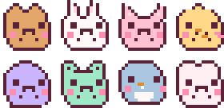
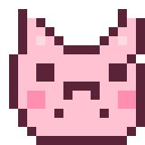
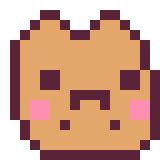
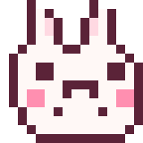
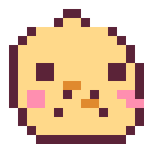
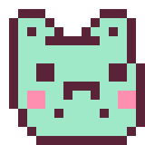
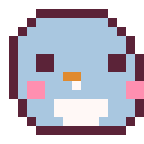
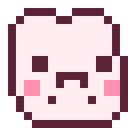
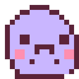
Ten choices: the shipped mark, the pixel mark, and the eight heads. Each is a compiled icon resource behind a launcher alias, so the launcher really draws the chosen one — no runtime swap of a single bitmap.
the picker
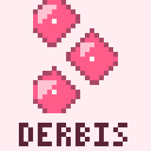
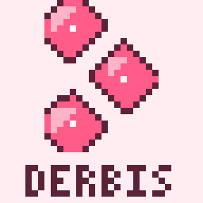
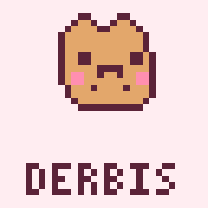
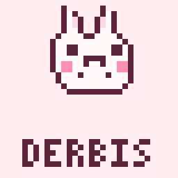
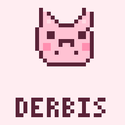
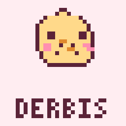
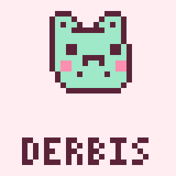
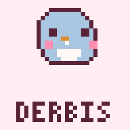
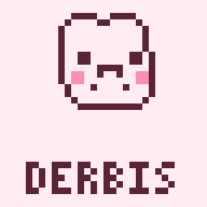
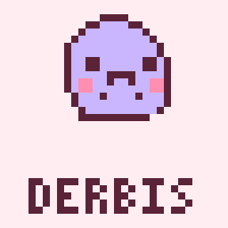
32 × 32 cells on the blush plate, wordmark underneath, every corner square. The two mark icons are read from the real logo files rather than redrawn, so "Pixelated" is the same mark at a coarser grid.
on the launcher
Left: original. Middle and right: a head chosen from the picker. The app name does not change.
All ten are compiled resources, so there is no download and nothing is fetched at runtime. Switching an alias makes the launcher redraw the icon, which on some launchers shows a second shortcut or keeps the old bitmap until a restart — that is a launcher behaviour, not something the app can force. The chosen icon also drives the splash, the About card and the widget header.